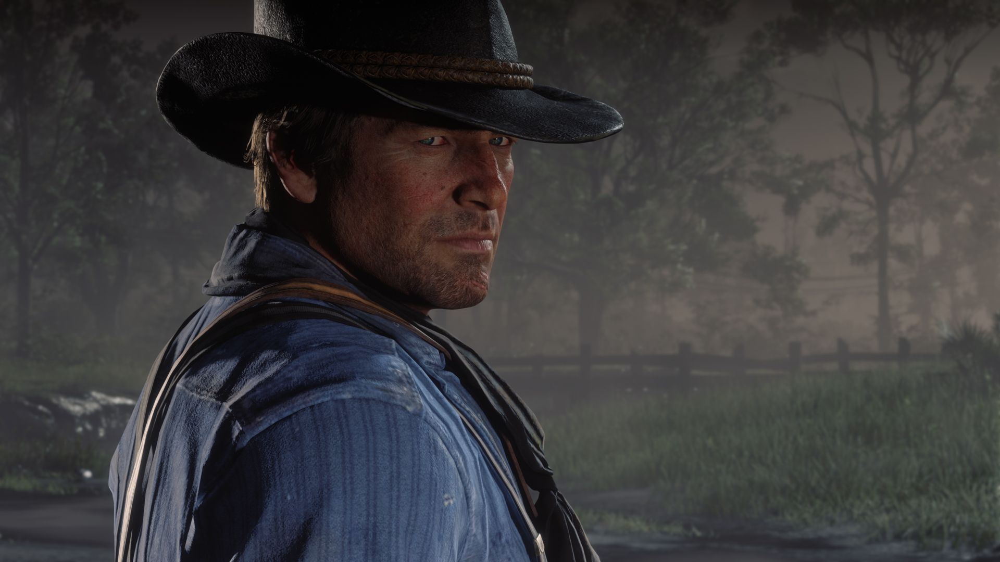
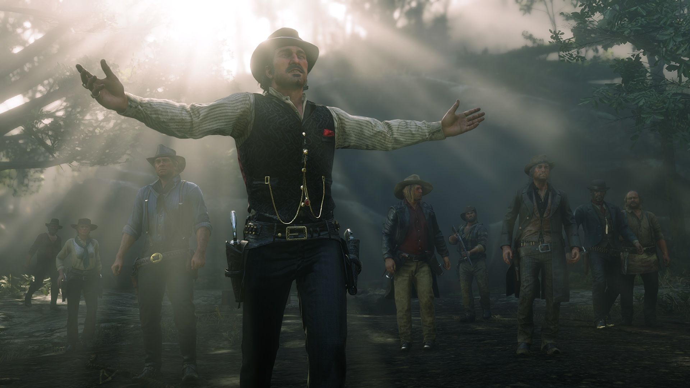
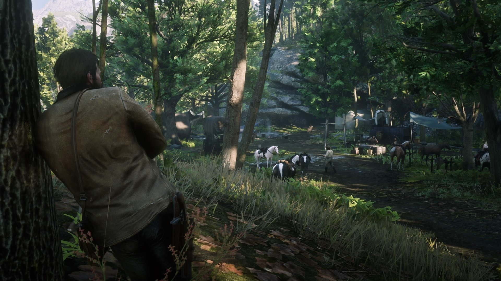
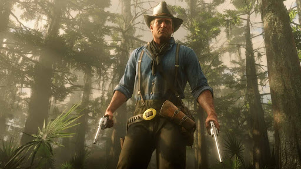

About
Red Dead Redemption 2 (stylized as Red Dead Redemption II) is a western-themed action-adventure video game developed and published by Rockstar Games. It is the third entry in the Red Dead series and a prequel to 2010's Red Dead Redemption
Set in a fictional recreation of the American Old West in 1899, Red Dead Redemption 2 focuses on the life of Arthur Morgan and his position in the notorious Van der Linde gang. The game follows the gang's decline as they are pursued by lawmen, fellow gangs and Pinkerton agents. The narrative revolves around the characters of Dutch van der Linde, John Marston and Micah Bell in addition to Morgan. Red Dead Redemption 2 is set in an open world consisting of five American regions, which the player can explore as they proceed with the story, and can be played through both third-person and first-person view. As Arthur Morgan, players can interact with the game world in several ways, including story missions, side quests, challenges, randomized events, and hunting. An Honor system, returning from the previous game, changes accordingly to the player's actions towards non-player characters.




My thoughts on the game
From the time it was announced i was looking forward to it.From the same developers as the Grand Theft Auto series the expectations for the game was already sky high.I had previously played the first game with my brother on his playstation 3, it was only for a short time but it was so memorable.
Cut to the year 2018, which in recent times was the Year of Gaming.It was the year I got into gaming, well I was into it previously as well but in 2018 I was completely hooked with the world of gaming.Following various news, award ceremonies, reveals, various YouTubers and also owend a Playstation 4 at this point.Many great games released that year but some stood apart from the rest.Games like God of War, Spider-man and Red Dead Redemption 2.A game which was 8 years in the making and had finally release after few delays.In the year 2020, the year of the pandemic I finally got the chance to play the game.After 60+ hours of gameplay I finally manages to finish the game.It was genuinely a cinematic masterpiece and by the end of the game I had thoroughly enjoyed it.